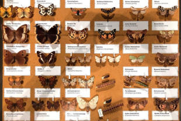
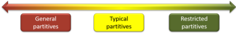
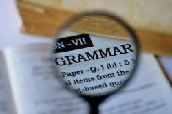
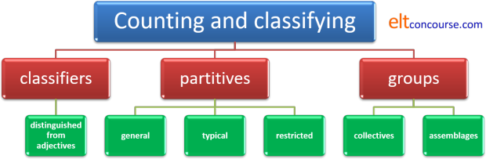
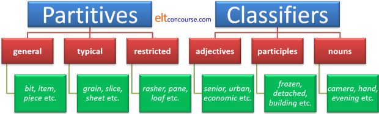
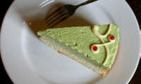

Classifiers, counters, partitives, collective nouns and assemblages

This guide contains a number of sections so here's a menu if you are
looking for only one of them.
Clicking on -top-
will return you to this menu.
This is an area where definitions differ (to put the issue as politely as possible), so first off we need a ...
 |
Website warningThere is deep confusion out here on the web about three terms in particular so we'll deal with those first and then we can get on. |
- Partitive noun vs. collective noun.
The names give the clue:- a partitive noun refers to a part of something greater
so, for example:
a bar of chocolate
is a smaller portion of a greater item (an identifiable amount of all the chocolate in the known (and unknown) universe) - a collective noun refers to a larger unit made of smaller parts (it is the reverse of a partitive). For
example:
an army
refers to a unit larger than the individuals (soldiers, usually but sometimes ants) making it up.
- a partitive noun refers to a part of something greater
so, for example:
- Collective noun vs. assemblage noun.
Both types of noun refer to the larger unit made of smaller amounts rather than the other way around. However:- Collective nouns usually contain semantically the units
of which they are made up so we do not need to say what the
unit is. We do not find, therefore:
an army of soldiers
a jury of people
a bench of judges
a library of books
etc. because it is tautologous to add the smaller units. We know what makes up an army, a jury, a bench or a library.
If we use a collective noun metaphorically, it often takes on the characteristics of an assemblage noun as in, for example:
an army of schoolgirls
and we need the unit because it is not what we are expecting. - Assemblage nouns are a subset of collective nouns and usually
do need the units to be
specified (or understood from context and co-text) so we do
not usually find
Look at that herd
The pack is over there
unless we are quite clear that we know what the herd and pack consist of. We would prefer, therefore:
a herd of cows (rather than wildebeests, elephants or zebras etc.)
a pack of dogs (rather than hyenas, jackals, cards or even lies etc.)
- Collective nouns usually contain semantically the units
of which they are made up so we do not need to say what the
unit is. We do not find, therefore:
For our purposes, classifiers encompass all three types of noun
although the term is often used in a specific way to describe a
characteristic of certain languages.
So, when you come across a website that claims that a cup of tea
is an example of a collective noun, move on rapidly because whoever
wrote it has very little idea how English nouns work.
 |
Issues for learners |
This is an area that causes problems for learners in three ways:
- in understanding that English is, in general, a non-classifying language in that it does not use counter classifiers (although it makes extensive use of other kinds)
- in applying the correct partitives, collective and assemblage nouns
- in recognising the kinds of classifiers available in English, distinguishing them from standard adjectives and applying the rules
Part of the problem is not being aware of, being misled about or
not appreciating the semantic properties of collective vs. partitive
nouns that we have looked at in the last section.
Teacher-induced error is quite common in this area.
At the end of the guide, we shall consider in more detail what
problems learners face and how we can help.
 |
Counting and classifying things |
In general, European languages do not use classifiers for all
nouns but other languages are different. In particular, East
Asian languages, including Chinese languages, Japanese, Burmese,
Thai and
Korean, for example, require a counter or classifier when referring
to nouns.
Japanese is our example here but many other languages have similar
systems.
These classifiers arguably constitute a closed word class in those
languages for which there is no equivalent class in English at all.
Japanese has a very significant number of classifiers
(also known as counters) for particular types of noun which must be
inserted before the noun:
| In English | In Japanese |
| five pencils | five (cylindrical-objects classifier) pencils |
| three dogs | three (animal-classifier) dogs |
| two chickens | two (bird-like classifier) chickens |
| three children | three (people classifier) children |
| six cars | six (mechanical-objects classifier) cars |
| three shirts | three (flat-objects classifier) shirts |
and so on for literally hundreds of types of objects including buildings of various sorts, time periods etc.
In classifying languages such as Japanese and Cantonese, you cannot
say, e.g., five biscuits without inserting the appropriate
classifying determiner (in this case, the
classifier for flat hard objects). Native speakers of
classifying languages, incidentally, may argue among themselves
concerning which classifier is appropriate to which set of nouns.
Speakers of these languages are obliged to consider the qualities
of whatever they are counting before they can decide on the
appropriate determiner.
Speakers of English do not have to do that but they do have to
consider other characteristics, notably whether a noun is a count or
mass noun before deciding on an appropriate determiner. Users
of other languages get luckier and need to make no such judgements.
Some languages also change verb structures to include the nature of
the thing which is the object of the verb. In English, which
does not do this, the verb give, for example, is unchanged
whatever the properties of the object being given. Some
languages might have as many as six different forms of the verb
depending on whether one is giving a mass noun (such as sugar),
a stick-like object, a liquid, a shirt or something amorphous such
as cotton or fluff.
English, in common with most European languages, does not do this and
that can cause problems for learners from certain language
backgrounds (as well, of course, for learners with European language
backgrounds trying to acquire languages which use counters).
Classifiers are particularly important in many African languages.
For example, in Zulu, a Bantu language, there are 13 classes of noun
signalled by prefixation including humans, proper names and kinship
terms, plurals, lengthy items (such as snakes), abstract concepts
and so on.
Swahili, another Bantu language, has no fewer than 22 prefix classes
denoting, inter alia, small things, long, thin things,
actions, plants and trees, human artefacts, very large things and so
on.
 |
Counting the (un)countable: using partitives |
| a loaf, a pat, a cup, a bunch and a portion |
Clearly, English is not so sophisticated but certain classifiers are used (although we don't usually call them by that name; they are generally analysed as partitives). There are two types but grammatically and semantically, they differ little.
- Mass partitives
- A common way
to use partitives in English is to make the uncountable countable.
What we do is use a specific or general term (the partitive) + of
+
the mass noun. The partitive can then be made plural.
For example:
An item of furniture (a general partitive)
Two rashers of bacon (a restricted partitive)
Three strips of land (a typical partitive)
Some heaps of junk (a general partitive)
What we call here typical partitives are sometimes referred to as specific partitives because they are specific to the type of nouns they modify. In that way English parallels languages which use counter classifiers because the selection of the correct partitive depends on consideration of the characteristics of the noun in question:
Is it soft, solid, flat, thin, liquid etc.? - Count partitives
- Count nouns, too, can be used with partitives. For
example:
A pile of books
A heap of tables
A bundle of newspapers
A row of houses
Six packets of lentils
A few boxes of pencils
etc.
Count partitives are also often restricted in some way semantically, depending on the nature of the objects to which they can be applied.
Partitives are distinguished from other types of classifications
because they denote part of a whole or part of a larger number.
For example, if we say:
Pass me a slice of that cake
we are referring to part of a cake which is available.
even when we say
I bought the last carton of milk
we are probably not referring to something of which more is
immediately available We understand that potentially more is
available in the world or the vicinity. It is not necessary
for more milk to be physically available at the time of speaking,
only that more is potentially available.
 |
Partitive or quantifier? |
On this site, quantifiers such as some, any, every, several,
a few, little etc. are dealt with in the guide to determiners,
linked below.
Technically, partitives are different insofar as they denote a
specific amount of something distinctive rather than an amount of just anything.
Another way of expressing that is to think of partitives as semantic
categories, dependent on meaning, while quantifiers, because of
their particular characteristics in terms of modifying singular,
plural and mass nouns fall into grammatical categories.
There exists, however, in a range of languages not including
English, something called a partitive article and that is
represented in English by the words some and any
which act in an article-like way.
French and other Romance languages are good examples. In
French, for example, we encounter a range including du, de l’ de
la, de l’ and des and Italian is just as sophisticated
with partitive articles including della, delle, dell', del, dei,
degli and dello with complex rules in both languages
for their correct use which challenge even native speakers at times.
English does not have a partitive article system and all those
expressions usually translate with the quantifying determiners
some or any.
Finnish, incidentally, manages to have a partitive case.
 |
Partitive or pre-determiner? |
Partitives are sometimes analysed as pre-determiners because they
can precede a determiner. They parallel pre-determiners proper.
The structure of pre-determiners + determiners is, e.g.:
He did half
my
work for me
She ate all the cake
One third of those apples
are
rotten
and those are parallel constructions to the use of partitives as in,
e.g.:
He did a heap of
my work for me
She ate three slices of the
cake
A whole barrel of the apples were
rotten
Gradability |
Apart from measures such as pint, yard, square mile, pound,
millilitre and so on which grade for quantity, English
essentially only has three common partitive-like
expressions which grade for quality: sort, kind and
type.
We have, therefore, what looks like a partitive (because the grammar
(see below) is parallel) but which is not identifying a quantity or
item of something greater:
This is a new kind
of apple
That's a better sort of
bread
She went to a different
type of school
etc.
These expressions are not partitives in themselves because they can
be preceded by a partitive proper (something partitives don't do
because they are mutually exclusive). We can have, therefore:
The fruiterer has a box of a new
kind of apple
I got a loaf of this new sort
of brown bread
They ate a plate of a different
type of fish
There are a few other expressions which are parallel but much
less common, including:
That's a litter of a new
breed of dog
They discovered a roost of a more interesting
species of bat
He gave her a bunch of a traditional
variety of roses
That's a hive of a different
class of bees
She said it was a collection of a different
category of butterfly
This is a pane of a new
form of glass
and in all those examples, the quality expression is preceded by a
partitive proper.
 |
Classifier use |
Many nouns normally used as mass concepts may be used as
classifiers. When this happens, they lose their nominal status
and become akin to adjectives (although they are not adjectives, in
fact).
So, as an alternative to partitive use, we can find the mass noun
converted to a classifier, like this, for example:
a pane of glass → a glass pane
an ingot of silver → a silver ingot
a lump of sugar → a sugar lump
a grain of rice → a rice grain
a bar of gold → a gold bar
and so on.
However, these are unreliably acceptable uses because we probably
would not accept:
?a furniture heap
?a coal lump
?a paper sheet
?a soap bar
?a grit grain
?an evidence item
and so on.
In particular, any metaphorical or figurative use of the partitive
is unlikely to be acceptably converted to a classifier use of the
mass noun so, for example:
*an intelligence flash
*an honesty scrap
*a work stack
*a hope glimmer
*a confusion cloud
are all disallowed.
What is acceptable is often a matter of opinion and there are no
rules to discover the level of acceptability. The advice for
learners, therefore, is to avoid these unless one is sure of their
correctness.
 |
The structure of partitives |
All partitives in English are simple to form and take the
structure of:
Determiner + Partitive + of + Noun
phrase
as in, e.g.:
a stack of jazz records
that sheet of typing paper
although the noun may itself be modified by a determiner or other
modifier so we may
have:
a block of that chocolate
a pile of those books
a slice of that delicious cake
and partitives themselves may take determiners (only those
which can apply to count nouns), be plural and be modified so we may have:
three thin slices of fruit cake
lots of tall panes of glass
two long rows of expensive cars
that untidy heap of books
a hot rasher of bacon
all the slices of Christmas cake
both piles of books
etc.
However, there are some constraints concerning which determiners
can appear in partitive constructions. Most can, so we allow:
a slice of a cake
a rasher of the bacon
a block of any material
a pint of both beers
a glass of either juice
a cloud of many flies
a cup of your coffee
a pile of some stones
a group of several people
a loaf of whichever bread you have
a sliver of that / this / those / these sausage(s)
a glass of each wine
etc.
On the other hand, we do not encounter:
*a slice of all cakes
*a bowl of every soup
because these two determiners are universal and do not allow the
noun to be conceived as divided.
| Type of thing | Partitive |
| rectangular blocks | bar: chocolate, soap, metals (especially gold) etc. |
| liquids | a range of measures including: pint, cup, glass etc. |
| thin sections | slice, sliver: cake, bread, pizza etc. |
| cuboids | block: ice, concrete, tables, buildings etc. |
| irregular shapes | lump: coal, concrete, metal etc. |
| thin, flat materials | sheet: paper, ice, glass etc. |
| abstract nouns | item: information, advice, work, evidence, news etc. |
| small things | grain: rice, sand, grit etc. |
| almost anything | bit: information, paper, glass, coffee, advice, help etc. |
 |
Three sorts of partitives |
It is tempting to have a clear distinction between general
partitives which can be used for almost any mass noun to make it
countable and typical or specific partitives for particular nouns
which form memorable chunks in themselves or at least qualify as
strong collocations.
Reality is slightly more complicated and
we actually have a cline from:
- general partitives, usable with almost any mass noun, through
- typical partitives which occupy the fuzzy middle area and whose use is constrained mostly by the physical characteristics of the material in question but which can be applied to both mass and count nouns, to
- restricted partitives which are confined to a single, or very limited range, of mass or count nouns
It looks like this:
|  | |||
| bit item piece touch |
act ball bar case cloud cluster coat dab drip drop flash game |
grain heap jar lump measures (pint, meter, acre etc.) pile plate sheet slice speck work |
blade (of
grass) bolt (of cloth) clove (of garlic) ear (of cereal crop) glimmer (of light) gust (of wind) loaf (of bread) lock (of hair) pane (of glass) pat (of butter) peal (of bells or laughter) rasher (of bacon) scoop (of ice-cream) stroke (of luck or genius) |
The overlap is between the types of partitives in question and
the examples is deliberate. It is not always clear whether
something is acting as a general, typical or restricted partitive in any
language which uses them. For example
a pair of ...
is only a count partitive and is restricted, obviously, to two objects but
can be used in a general way for any two objects
(although it also acts as a more restricted count partitive in the case
of shoes, socks, scissors and trousers).
a pile of
is also used informally as a general partitive for countable
and mass nouns (work, furniture, books, trouble, problems, paper
etc.) but is semantically restricted in the sense that it
cannot be used for liquids (*pile of water / milk / beer
etc.) or non-tangible nouns such as light, advice, help or sound
(but pile of trouble is a common enough metaphorical exception).
In the restricted and typical partitive columns belong a number of
metaphorical idioms (clichés, if you prefer) such as:
pang of hunger / guilt
torrent of abuse
scrap of difference
article of faith
grain of intelligence
glimmer of hope / life
flash of insight
drop of sympathy
The notorious politician-speak partitive raft of (policies,
measures etc.) belongs here, too.
There are further issues to do with mass vs. count noun uses.
- General partitives are used to make a huge range mass nouns
countable. We can have, therefore:
three pieces of information
two bits of advice
a touch of irony
a piece of furniture
but not:
*three pieces of facts
*two bits of apples
*a touch of raisins
*a piece of books - Typical partitives, because they refer to the physical
properties of matter are often (not invariably) usable with both
mass and count nouns. We get, therefore:
a ball of string
and
a ball of rubber bands
a jar of cream
and
a jar of cherries
a cloud of dust
and
a cloud of insects - Restricted partitives are almost always confined to defining
a quantity of a mass noun. We have, therefore:
a pane of glass
a blade of grass
a scoop of ice cream
and so on, but none can be used with count nouns so
*a bolt of cloths
*a gust of breezes
*a loaf of bread rolls
and so on are not allowed.
An advantage for learners is that the general partitives can
usually be used to replace the typical or restricted partitives when
these are not known so we can have, for example:
Pass me that, erm, bit of paper
instead of
Pass me that sheet of paper.
The problem for learners is obvious. Apart from the general partitives which can be used with almost any mass noun:
- the restricted partitives have to be learned as language chunks and
- the typical partitives have to be associated with certain types of noun only
as in this list of common typical and restricted partitives:
| Partitive | + | Nouns |
| act | mass nouns for abstract behaviours: kindness, stupidity, meanness, war etc. | |
| ball | mass or count nouns which come in lines: string, wool, thread, elastic bands etc. | |
| bar | mass nouns which come in regular blocks: soap, chocolate etc. | |
| barrel | mass nouns for liquids: beer, wine, oil etc. | |
| bolt | mass textiles: essentially only cloth but material is possible and specific types of material such as silk etc. | |
| bottle | mass nouns for liquid stored in tall, thin, glass containers: milk, beer, lemonade, olive oil etc. | |
| bowl | mass or count nouns, usually mass, for liquid or semi-liquids, often foodstuffs: soup, cereal, porridge etc. | |
| box | mass and count nouns for materials kept in cubic or cylindrical containers: jewellery, cereal, chocolates etc. | |
| can | mass or count nouns for items stored in a particular type of metal container: soup, beans, beer, oil, paint, petrol etc. AmE for all such items, BrE also tin of (cf.) | |
| case | mass nouns for abstract actions: forgetfulness, dishonesty, mistaken identity etc. | |
| cloud | mass nouns for gases, chemicals, small insects etc.: dust, smoke, perfume, mosquitos, poison, fumes etc. | |
| cluster | count nouns for item held together or in close proximity: stars, consonants, cottages, cases (disease), customers etc. | |
| coat | mass nouns for coverings: paint, cement, varnish etc. | |
| crate | count nouns for glass containers: bottles, wine, beer etc. | |
| dab | mass nouns for viscous liquids: perfume, oil, paint, glue, grease etc. | |
| drop | mass nouns for free-flowing liquids: water, alcohol, blood, rain etc. | |
| fit | mass nouns for sudden emotions: anger, generosity, pique etc. | |
| flash | mass nouns for lights and colours: light, green, lightning etc. Also metaphorically: inspiration, genius etc. | |
| heap | mass or count nouns for objects in unorganised groups: books, sand, earth, papers, chairs etc. | |
| game | games and sports (usually mass nouns): chess, cricket, tennis etc. | |
| grain | mass nouns for small pieces of material: dust, salt, sand, sugar etc. | |
| jar | mass and count nouns kept in glass containers: jam, cream, onions, marmalade, pickles etc. | |
| lump | mass nouns for irregularly shaped materials: coal, concrete, iron etc. | |
| measures | specific ones for length, square measures, liquids etc.: gallon, mile, hectare etc. | |
| packet | mass or usually count nouns for dry foodstuffs etc.: raisins, biscuits, sweets etc. | |
| pile | mass or count nouns for tangible objects which can be placed in vertical series: sand, furniture, books, ash etc. | |
| pinch | mass nouns for small pieces of material held between thumb and finger: salt, spice, dust etc. | |
| plate | mass nouns for thin stiff materials and foods: vegetables, glass, steel etc. | |
| portion | all types of food (count and mass): vegetables, meat, fish etc. | |
| punnet | count nouns for soft berry fruit: strawberries, raspberries etc. | |
| reel | mass nouns for long, thin materials wound on a cylinder: cotton, string, tape etc. | |
| roll | flexible materials (mass and count) which can be made cylindrical: wallpaper, labels, sticky tape, leather etc. | |
| row | usually count nouns denoting items which are arranged horizontally: books, cars, houses, huts, chairs etc. | |
| scrap | mass nouns for small, flexible materials usually insignificant: paper, cardboard, cloth etc. Metaphorically also difference | |
| sheet | mass nouns for thin materials: glass, paper, ice etc. | |
| slice | mass or count nouns for certain types of food: cake, pizza, bread, sausage, banana etc. | |
| speck | very small amounts of mass nouns for materials: dust, dirt, ink, pain etc. | |
| stack | flat or cuboid count and (rarely) mass nouns which can be vertically arranged: books, tiles, cards, paper, bricks, dice, files etc. | |
| tin | mass or count nouns kept in a specific type of metal container: paint, beans, soup, fruit etc. BrE usually (cf. can of). | |
| torrent | fast flowing mass nouns for liquids: water, sewage, oil etc. Metaphorically also abuse, curses | |
| work | cultural mass nouns: literature, art, fiction, genius etc. |
This is not an easy area for learners of the language by any means.
- Restricted partitives which collocate with a single noun or two are best treated as language chunks. A rasher of bacon, for example, uses a partitive which cannot be applied to any other noun.
- Typical partitives need a slightly different approach
because there are physical notions attached to them of, e.g., flatness
and thinness (slice, plate, sheet), size (speck,
grain), shape (lump, bar), arrangement
possibilities (row, pile, heap, stack), containers (jar,
box, bottle) etc.
We need to help learners to notice these generalities and that can only be done by explicitly mentioning the typical partitive when introducing the mass noun. There's little point in knowing the word soap if you can't talk about a bar of soap. - Some partitives are typical for time and location.
They include, for example:
end of (+ day, road, street, week etc.)
middle of (+ morning, room, road, week, summer etc.)
beginning of (+ day, spring, book, meeting etc.)
back of ([in BrE only for location] + house, car, garden, building etc.)
front of ([only for location] + house, garage, door, book, desk etc.)
etc.
These partitives are usually found with of + a determiner such as the or that and may include an adjective phrase such as:
at the end of a long tiring day
rather than simply of. - As we saw above, many partitives can be used metaphorically,
as if they were
typical of the noun they classify. In these cases, the
rules above are broken for effect and the use should not be
mistaken for literal senses. So, for example, we get:
- a stack of work
- a slice of responsibility
- a cloud of confusion
- a grain of humility
- a pile of / stack of trouble, problems, money, arguments
- torrent of abuse
- a glimmer of hope
- a scrap of evidence or difference
The list of partitives here is also available as a PDF document, linked at the end of the guide.
Things in groups: collective and assemblage nouns |
|
| a herd of wildebeest |
In many analyses no distinction is made between collective nouns
and assemblage nouns. So, for example:
jury, flock, herd, family, litter, army, crew
and so on are all treated as different sorts of collective nouns.
That is a defendable position but, because there are obvious
differences within the general term collective, we will
take a slightly more precise route and distinguish between
collective nouns and assemblage nouns.
They both refer to groups.
The two categories discussed in this section denote the reverse relationships to partitives.
- Partitives refer to a part (hence the name) of a whole.
- Group nouns refer to the whole made up of the parts.
 |
Semantic issues |
Group nouns come in two sorts which are semantically distinguished:
- Collective nouns

refer the whole made up of its parts so
an army
is understood as a large collection of fighting people
a family
is a unit of related individuals and so on.
We usually know what forms the individual units because, by their nature, the collective nouns imply the types of things to which they refer. So we can say, for example:
the jury has reached a verdict
and we know that jury is a collective noun for people who are called to decide a legal case.
Equally, for example, we know the individual components of:
an army
a committee
the police
the congregation
the audience
the family
the cavalry
the senate
and so on and it is rarely necessary and stylistically questionable to add what the noun is composed of, so we do not hear:
a jury of members
an army of soldiers
a committee of members
a congregation of worshippers
police of police officers
an audience of spectators
a family of relations
a cavalry of horse riders
a senate of lawmakers
etc.
The reason for this is that the nature of the items that make up these nouns is already a semantic component of the noun itself just as, for example, the word bachelor contains the sematic component of adult, male and unmarried so to say:
an army of soldiers
is just as tautological as to say:
an unmarried adult bachelor
Metaphor
Nevertheless, if a collective noun is used in an unusual or metaphorical way, the of-phrase is often used to make that clear so we may have, e.g.:
a shoal of creditors (a metaphor for sharks)
an army of rats (a metaphor for soldiers or attackers)
a family of words (a metaphor for relatives)
and so on. - Assemblage nouns
(such as a skein of geese) are slightly different.
Assemblage nouns are sometimes called venery nouns (a word derived from the Old French verb meaning hunt) and initially used only for animals which were game of some kind (e.g., a paddling of ducks).
With exceptions, assemblages do need us to say what they consist of unless the context has already made it clear. We cannot, therefore, simple say
the flock is over there
the pack is here
the bunch are on the table
and so on unless we add
of sheep
of cards
of bananas
or from the context it is clear what we are referring to (sheep not birds, cards not dogs, bananas not grapes, keys or friends etc.).
There are a few very restricted assemblage terms to which this does not apply although it would still be rare to say or hear:
the pride is coming
the gaggle is noisy
without mentioning that we are referring to lions and geese respectively. So, too:
a herd
has little meaning unless one knows what the constituent parts are, either by context or by the addition (which is the preferred route) of an of-phrase, so we say:
Look at that herd of elephants
even when it is obvious what sort of animals are in question. Thereafter, we may well use the word alone because the of elephants bit is understood.
By the same token, we would not normally say:
a band
without saying of what:
of outlaws
of musicians
of enthusiasts
of thunderstorms
and so on.
The context, of course, makes it clear sometimes what we are talking about so at a concert, referring to a band will usually signify a band of musicians of some kind.
Some animals and other entities have very restricted assemblage nouns to refer to them. So, for example, we have:
a charm of finches
a shoal of fish
a troop of monkeys
and so on.
There are a number of rare, fanciful (and often invented) assemblage nouns for some creatures including, for example:
a murder of crows
an exaltation of larks
and so on.
Even in cases where the assemblage noun is restricted to only one, or a severely limited number of, things, the of-phrase is still conventionally used. Nobody is likely to say, then
Look at that pod
without adding:
of dolphins / porpoises / whales
Restricted assemblage nouns for animals are very probably worth ignoring for teaching purposes because they are functionally almost worthless and of dubious historical validity (many were invented by Dame Juliana Berners in the 15th century).
Metaphor
is also possible with assemblage nouns when the items or people are considered to be acting in a certain way so we may have, e.g.:
a troop of schoolchildren (monkey-like behaviour)
a herd of supporters (hoofed-animal-like behaviour)
a bunch of relatives (clump-like behaviour)
and so on.
|  |
Grammatical issues |
There are clear grammatical similarities shared by partitives, collective nouns and assemblage nouns. The form of the phrase in which they occur is simple and predictable in all three cases:
| Type | determiner | noun | of | noun phrase |
| Partitive | the / that / this / a(n) etc. | pane | of | stained glass |
| Assemblage | the / that / this / a(n) etc. | flock | of | summer birds |
| Collective | the / that / this / a(n) etc. | army | (of) | (ants) |
but in the case of collectives, the of-phrase is optional or determined by the fact that the collective noun is being used metaphorically as here, hence the brackets. Metaphorical use of collective nouns converts the noun to an assemblage noun.
For teaching purposes, therefore, it is useful to treat group and partitive expressions together when considering form but equally useful to distinguish them when considering meaning.
There is one obvious grammatical difference to do with concord, too:
- Partitive expressions may be used with singular or plural
verb and pronoun forms depending on strict grammatical
considerations. The choice of plural or singular concord
depends solely on the partitive itself. So we have, for
example:
Three bars of soap were used and they had to be replaced
A jar of olives is in the cupboard so take them from there
He ate four portions of vegetables and found them delicious
She put a few lumps of coal on the fire and they burnt well
Even when the partitive refers to a mass noun, pluralising the partitive results in plural verb and pronoun forms. - Collective nouns are not grammatically so consistent.
- Collective nouns proper are
frequently used in the singular with singular verb and
pronoun forms and it is considered bad form to use plural
forms in formal language so we have, for example:
The army is helping out and it is being asked to do more
The family is all here
The committee has decided
and so on.
However, in British English, plural forms are often used under the influence of notional concord (which refers to the way the speaker / writer perceives the group: as individuals or a single entity), so we will hear:
The government are introducing legislation
The board have met
The audience were unimpressed
etc.
We also often see a mix of concord as in, for example:
The committee which reached its decision were criticised
The committee who reached their decision is incompetent
The congregation was told to get on their knees
For a little more, see the guide to concord, linked below.
When an internal conflict is detected, British English usually settles on plural concord so we get, e.g.:
The jury is unanimous about the first charge but on the second, they are divided. - When a singular collective noun
is used routinely without specification of the units that
make it up, the preferred and safe choice especially in
formal language is to keep with singular verb and pronoun
forms:
His collection is famous for its completeness
The anthology is exceptional
The pool is limited
The atlas has been revised
etc.
General American usage is almost always to use the singular forms in these circumstance.
- Collective nouns proper are
frequently used in the singular with singular verb and
pronoun forms and it is considered bad form to use plural
forms in formal language so we have, for example:
- Assemblage nouns are influenced
by proximity concord (the effect of the nearest noun to the
verb, determining its form). We can have, therefore, in British
English, both singular and plural forms and, sometimes, an
uneasy mixture:
The herd has been driven to market and they have been sold
and
The herd of cows have been driven to market and it has been sold
The pack was dangerous
The pack of dogs were dangerous and it was avoided
and so on.
The use of the usually obligatory of-phrase containing a plural noun influences the kind of concord which is used.
This grammatical inconsistency in British English is not present
in many other varieties so American usage will almost always settle
on singular verb and pronoun forms for singular subjects.
Most other languages will do the same when a parallel structure
exists.
 |
Pronunciation issues |
There are few of these but two issues are worth noting:
- The of construction may be missed altogether when
learners hear the phrase because it is often very severely
reduced either to /əv/, /ə/ or to /v/. So, for example:
a herd of cows
will sound like
/ə.hɜːd.əv.kaʊz/
/ə.hɜːd.ə.kaʊz/
or
/ə.hɜːd.v.kaʊz/
Learners may also fail, of course, to produce the weakened form of the preposition. - Usually, both the partitive, collective or assemblage noun
will carry some stress but the main stress will fall on the main
noun, as one would expect so, for example:
a rasher of bacon
and
a pane of glass
will usually be pronounced as:ˌˈ
/ə.ˌræ.ʃər.əv.ˈbeɪk.ən/
and
/ə.ˌpeɪn.əv.ˈɡlɑːs/
respectively.
Speakers may of course, use special stress to mark some elements, especially when the use is metaphorical in, e.g.:
There was a huge army of caterpillars on my vegetables
when the pronunciation, stressing the assemblage noun for effect, might be:
/ðə.wəz.ə.hjuːdʒ.ˈɑː.mi.əv.ˈkæ.tə.pɪ.ləz.ɒn.maɪ.ˈve.dʒɪ.təb.l̩z/
but that is not the canonical form.
 |
Headedness 1 |
There is one final difference between partitives and assemblages or collective nouns which should be mentioned although there are disagreements in this area:
- Partitives follow the general rule in English of being right
headed (or head final) in terms of meaning and word class.
Just as
a taxi driver
is a kind of driver not a kind of taxi and
a hill walker
is a kind of walker not a kind of hill so, for example
a coat of paint
a dab of paint
a smear of paint
a drop of paint
are all ways essentially to describe the paint, not the coat, dab, drop or smear. - Assemblage and collective nouns can be seen to break the
right-headed rule in English and that can confuse. For
example:
a jury of schoolchildren
a jury of old women
a jury of your equals
etc. all describe the type of jury, not the individuals in it.
Equally,
a herd of cows
a herd of antelopes
a herd of elephants
etc. all describe the type of herd, not the animals in it.
Those who disagree will take one of two positions:
- All partitives, collective and assemblage
nouns break the right-headed convention so
a rasher of bacon
describes the rasher
an army of robots
describes the army and
a flock of sheep
describes the flock. - None breaks the rules so:
a rasher of bacon
describes the bacon
an army of robots
describes the robots and
a flock of sheep
describes the sheep.
The safest position to take is probably to say that partitives usually abide by the right-headed rule and assemblage and collective nouns often appear to break it. This is not a topic to which much classroom time needs to be devoted providing the meaning is clear and represents the mental picture a learner has or needs to have of something.
There is more on headedness in the discussion of classifiers, below.
 |
A selection of assemblage nouns |
| a fleet of fishing boats |
We saw above that there are many fanciful names for assemblages
of animals in particular which are usually worth avoiding because of
their obscurity and dubious reliability. Many of the more
fanciful terms are metaphorical allusions to the presumed behaviour
of animals such as a murder of crows, a charm of finches, an
exaltation of larks and so on.
Here, however, is a
short list of common assemblage nouns which do have some utility
and can be taught effectively providing they are sensibly
categorised.
| Assembly | + | Typical nouns |
| Animals | ||
| flock | + | birds although there are fanciful names for particular types of birds. However, also a flock of sheep. |
| herd | mainly large animals: antelopes, horses, kangaroos, cattle, deer, oxen etc. | |
| litter | young animals: kittens, puppies, cubs etc. For birds, especially unhatched eggs, a clutch of is conventional. | |
| pack | social carnivores: dogs, wolves, hyenas etc. However, a pride of lions. | |
| pod | cetaceans: whales, dolphins, porpoises | |
| shoal | fish | |
| swarm | small animals and insects in particular: ants, flies, bees, wasps, termites etc. Metaphorically this also applies to numerous things which look small and undifferentiated from a distance (a swarm of people, school children etc.) | |
| Things | ||
| batch | + | items dealt with at the same time: loaves, cakes, examination papers, letters, emails, reports, surveys etc. The term is also used to apply to people dealt with in groups, children, patients, students, applicants etc. |
| bunch | fruit which hangs from the plant or something which looks very similar: grapes, bananas, flowers, keys etc. This is also used metaphorically for any unorganised group of items or people (bunch of clubbers, customers, students, papers, trees, rags etc.) | |
| fleet | ships, boats and cars | |
| flight | aircraft, steps or stairs | |
| pack | cards, cigarettes, lies, batteries etc. Often with reference to how things are sold. | |
| set | matching items: cutlery, crockery, plates, (golf) clubs, teeth, jewellery, furniture, chess pieces etc. | |
| People | ||
| band | + | musicians and criminals: orchestra players, thieves, robbers, highwaymen etc. |
| company | performers: actors, dancers, players, singers etc. | |
| field | individual, competing sports people: runners, athletes, riders, players etc. (Also crops.) | |
| gang | hand workers: workmen, labourers, builders etc. (A crew of is also used, especially, but not solely, for seamen and others working on the water (rowers, yachters, fishers, sailors etc.) | |
| horde | aggressive people: savages, attackers, hooligans, rioters etc. | |
| team | sports people and workers: footballers, cricketers, baseball players, workers, designers, doctors, programmers etc. | |
There is a similar, though less easily represented, cline in this table like the one above for partitives from the more generalised expressions such as gang, band, batch and bunch through more restricted but typical items such as company, team and horde to very restricted terms like pod, shoal, fleet and flight.
The list of assemblage nouns is also available as part of the PDF document linked at the end of the guide.
Classifiers and epithets |
|
| a solitary oak tree |
If you have followed the guide to either adjectives or
pre-modification of noun phrases, you have encountered the
distinction between an adjective proper (an epithet) and a
classifying pre-modifier.
An adjective, whether gradable or not, describes
the noun; a classifier categorises it.
Classifiers which are often nouns are also known as noun adjuncts, incidentally.
This use of the term classifier is different from the use above of a
counter token (as exemplified by Japanese) and does refer to English
and other European languages.
For example:
- a solitary tree describes the tree, not its type so it is an epithet
- an oak tree categorises the tree and distinguishes it from other types of tree so it is a classifier
Classifiers are, therefore, indications of a subclass of the thing in question. If you are familiar with the term hyponymy, this is superficially straightforward. For example, there are no prizes for spotting the odd one out in this diagram:

It is simple to tell that fast car is not a type of car; it
is a description of a car. Fast is an adjective, the
others are classifiers. The simple test is to try to modify
the word with an adverb or make a comparative form. If that
can be done, we are dealing with an adjective and if it cannot, we
are dealing with a classifier.
We can have, therefore:
an amazingly fast car
a sadly solitary tree
a more solitary tree
a very lonely man
but not
*a very sports car
*a slightly oak tree
*an oaker tree
and so on.
Unfortunately, some adjectives also resist modification and here the
test loses its validity and we are left with a grey area. For
example, is the word dead in
a dead tree
a classifier or an adjective? It is clear that we cannot have
*a slightly dead tree
*a deader tree
etc. because the adjective resists grading,
but if we accept
a very dead tree
or
a completely dead tree
then we are dealing with an adjective proper. Similar
considerations apply to adjectives such as unique, and
more unique is regularly heard.
A supplementary test is to use the word predicatively. We can
have
the tree was solitary
the man appeared very lonely
etc.
but clearly not
*the car was sports
*the tree seemed oak
etc.
Even this test is not completely secure because words like
flightless and waterproof are used both ways with
subtle differences in meaning:
a flightless bird (classifier)
the bird is flightless (adjective
describing this particular bird)
a waterproof coat (classifying the type
of coat)
the coat was waterproof (describing the
coat's quality)
 |
Three types of classifiers |
- adjectives as classifiers
- Some words can perform both the adjective and the
classifying functions depending on the
meaning intended. For example:
a senior officer
has the word senior acting as a simple adjective. We can have more senior, very senior, most senior etc.
but in
a senior teacher
the word is a classifier, categorising the teacher by job title and function and it makes no sense to refer to a more senior teacher, unless we are referring to the teacher's age or experience.
Equally, the word rural can perform both functions:
a very rural setting (adjective)
a rural issue (classifier) - participles as classifiers
- Many adjectives are actually verb participles in disguise and
act quite normally as adjectives. For example:
a very boring landscape
an extremely frightened child
a well educated teacher
the most compelling film
and in these cases we can modify them and produce comparative or superlative forms so they are adjectives.
However, in
a boring tool
printed matter
printing ink
a framed picture
typing paper
all the participles are classifiers.
Whether the participles are adjectives or classifiers, the meaning distinction between the forms comes down to one of two factors:- -ing participles refer to role of the noun in
effecting a process
a boring speaker
printing ink
but -ed participles refer to the noun being affected by the action
a bored listener
printed paper - -ing participles refer to an action in progress
manufacturing industry
welding torch
but -ed participles refer to a finished action
a manufactured artefact
a welded pipe
- -ing participles refer to role of the noun in
effecting a process
- nouns as classifiers (also known as noun adjuncts, attributive nouns, qualifying nouns, noun (pre)modifiers or apposite nouns)
- These are the most frequent forms but they have their own
issues:
- They are less predictable in meaning: a spider web refers to something made by a spider but a paper airplane refers to something consisting of paper. Some knowledge of the world is required to understand what is meant in many cases.
- Noun classifier + Noun structures blur imperceptibly
into compound nouns:
It is clear that, e.g., earthquake is a true compound with the subject as its head (it is the earth that quakes). Other examples are less clear:
town planner is often seen as a compound but garden planner seems more easily analysed as a Noun classifier + Noun. In these cases, it is the object which forms the head (the town is planned, the garden is planned).
The fuzziness of the borderline between Noun classifier + Noun and true compounds causes problems of course, not least because compound nouns are usually stressed on the first item and the Noun classifier + Noun structure is variably stressed. There is a guide to compounding on this site, linked in the list of related guides, below. - Noun classifiers are irregularly marked for number: we
have
a saloon car
but
a sports car
a sports bag
but
a camera bag
a complaint form
but
a complaints department
and so on.
The way to bet is that they are singular so we have
model car collection
portrait gallery
landscape photography
and so on.
Learners who do not have parallel structures in their first languages will often be tempted to make all noun classifiers plural.
 |
Headedness 2 |
English is a
right-headed language in the formation of noun phrases. The headword in the compound lies to the
right as in, e.g., taxi driver where taxi classifies
the type of driver. In that phrase, driver is
the Head. Many related, especially Germanic, languages follow the
same pattern of right-headedness as does, e.g., Basque (taxi gidaria), Turkish
(taksi sürücüsü), Dutch (taxi chauffeur), Danish (taxachauffør),
Swedish (taxichaufför) and many other languages.
Some right-headed languages also agglutinate, forming words by
affixation, so in Finnish, a taxi driver is a taksikuski
and in German, a Taxifahrer.
Other languages do things differently.
In left-headed languages someone who drives a taxi is not a taxi
chauffeur but a chauffeur de taxi (French) or a shofer
taksie (Albanian), řidič taxíku (Czech), водитель такси
(Russian), sewwieq tat-taxi (Maltese, a Semitic language),
sofer de taxi (Romanian) etc. In
French, a postage stamp is a timbre-poste, in Polish a
znaczek Pocztowy and in Romanian a timbru poștal (stamp
postage in all cases). Other left-headed languages include
Vietnamese, Thai and Welsh, in which taxi driver translates as
gyrrwr tacsi, and postage stamp as stamp post,
incidentally.
To complicate matters, some languages, particularly Slavic ones such as
Polish and Russian, will place the adjective before the noun but choose
to place a classifier after the noun. So we have, e.g., big
house but old player record. In Polish, for example,
large postage stamp translates as duża znaczka pocztowa
(literally large stamp postage).
Many languages avoid classifiers and will use a kind of genitive structure (a driver of buses, a stamp of postage etc.) or simply supply a different ending for someone who does something (as English can with gardener, teacher etc.) but, instead of deriving the person from the verb (as English does with taxi driver, classifying the noun driver and adding -r to the verb to make the doer of the action), they will derive the person from the noun and have taxista (Spanish, Catalan, Portuguese, Galician etc.) or tassista (Italian).
Summaries of the analysis
The overall analysis presented here can be summarised like this:

The distinctions between classifiers and partitives can be summarised like this:
There's a short matching test to see if you have remembered this classification and can match the terms to examples.
|
|
Problems for learners |
All of the above should have convinced you that this is not at
all an easy area for learners.
Using the wrong partitive, group noun or classifier or failing to recognise
right-headedness will rarely result in communicative breakdown
because a sympathetic native speaker will be able mentally to
correct the utterance but learners who cannot handle partitives,
group nouns and
classifiers will often sound unnatural and what they say will be
recognisably non-English.
For example, the following, while not all grammatically wrong or
overtly flawed are unnatural to most people's ears:
a lump of information
a sliver of bacon
a chair of the office
the airport of the city
a block of coal
a pane of plastic
a herd of sheep
a group of birds
If natural production is the aim, especially above early levels,
this area needs attention.
Here are some more ideas of what the
problems might stem from and some simple ways to deal with them:
- Confusions caused by poor analysis or incomplete teaching

- Collective vs. partitive nouns
There are some websites, purportedly helping people to learn English or about English, which will suggest that something like
a box of chocolates
is a collective noun.
In the sense that box of refers to a collection of chocolates, they are right, of course, but a moment's thought will reveal that we are referring here to a limited number of items from an almost limitless potential supply. The term is, therefore, a partitive, not a collective noun.
We need to get a semantic issue right from the beginning because without it, confusion will be caused:- a partitive is a noun representing a smaller unit of a larger unit
- a collective noun is a noun representing a larger unit made up of smaller units
- Collective vs. assemblage nouns
If learners are not made aware of this difference, some of what they say will, at the least, be unnatural.- Collective nouns do not usually need the units to be
expressed so terms such as army, jury, government,
board, committee and so on are rarely used (if the
use is literal) with the xxxx of structure.
Including the units produces unnatural and sometimes tautological language such as:
a committee of people
an army of soldiers
etc. - Assemblage nouns usually need the units to be
explicit so we get a pride of lions, pod of whales,
flock of starlings, clump of trees
and so on.
Leaving out the units causes comprehension failure sometimes and almost always sounds unnatural. For example:
?Can we see a pod?
?Look at that huge flock
?He has a clump at the end of his garden
etc.
- Collective nouns do not usually need the units to be
expressed so terms such as army, jury, government,
board, committee and so on are rarely used (if the
use is literal) with the xxxx of structure.
- Collective vs. partitive nouns
- Partitives:
- Learners from certain language backgrounds may expect to be
able to translate the counter classifiers from their first
languages and be confused that English does not have separate
classifiers for the same categories (animals, people, flat
things etc.) that their first language uses.
Simply making them aware of this with a little comparative language work can usually solve the problem and these learners will, of course, not be strangers to the idea of typical partitives. - Learners with a European first language may have difficulty applying the right partitives because languages differ in the categories which are applied. Many languages have far fewer of these and rely on general partitives such as piece, item or bit. Learners from these language backgrounds may well over-generalise and apply the wrong partitives, producing, for example, *a lump of paint when speck or dab is meant.
- Teaching the general partitives will help, especially at the beginning but as they progress learners will need to apply the typical partitives for substances they know or they might not realise that there is a difference between a bit of glass and a pane of glass.
- Teaching the restricted items as lexical chunks helps (because there are no easily acquired rules) and, when introducing the terms for substances or dealing with mass nouns, providing the collocating partitive then and there will be useful because it is more difficult to apply the categories later.
- Problematizing the issue helps because learners may not
be aware that there is something worth learning in this
respect. For example, getting learners to make a
sketch of
a bit of glass
a pane of glass
a lump of cake
a slice of cake
a bit of string
a ball of string
etc. may alert them to the need to notice the language and the notions it encodes.
Abstract ideas are trickier to deal with but providing or eliciting examples of the differences between, e.g.:
a bit of kindness
an act of kindness
a stroke of genius
a work of genius
a case of dishonesty
a bit of dishonesty
etc. will pay dividends in alerting the learners to the shades of meaning.
- Learners from certain language backgrounds may expect to be
able to translate the counter classifiers from their first
languages and be confused that English does not have separate
classifiers for the same categories (animals, people, flat
things etc.) that their first language uses.
- Assemblage and collective nouns:
- As we saw, collective nouns proper do not usually
require the of-phrase so it is a mistake to speak
of
a family of relations
a jury of people
a committee of members
and so on.
This is not always mirrored in other languages and that may lead to the unnecessary inclusion of the of-phrase.
In other cases, a collective noun will have added meanings in other languages, so, for example, congregation in German translates by a term which can also mean community or municipality and in French by a word which can also mean religion. - Assemblage nouns are almost wholly unpredictable and
rarely translate across languages.
In French, for example, a herd of cows and a flock of sheep will both take the assemblage noun troupeau whereas flock of birds will translate as vol d'oiseaux.
In German, the same word is also used for flock and herds but a flock of birds uses schwarm which is cognate with the English word reserved for insects (swarm).
Similar considerations apply to Spanish, Italian and other Romance languages.
Greek distinguishes herd from flock with different words but has a separate word when flock is applied to birds.
Many language may have a single collective noun to translate the English assemblage expression and some will simply compound the animal with a generalised word for group.
Words such as batch are equally obscure and, for example, a different word would be applied in German for students, papers and applicants although French has an equally generalisable expression (lot).
In sum, it is very unlikely indeed that languages other than English use assemblage nouns in anything like parallel ways. Some assemblage terms in English will simply not have any equivalents in other languages and their speakers will rely on generalised words such as group or collection. The reverse may also apply.
- As we saw, collective nouns proper do not usually
require the of-phrase so it is a mistake to speak
of
- Classifiers vs. epithets:
- Again, languages differ and many will avoid the use of a
pre-modifying classifier and use a genitive structure instead as
we saw above. Speakers of Greek or French, for
example, may be tempted to say the driver of the bus
or the bus's driver which, while not obviously
wrong, are much less natural than the bus driver.
Because such expressions are unnatural rather than patently
wrong, there is a temptation to ignore them. That's a
mistake.
This needs careful handling and some comparative language work can pay dividends in getting learners to notice the differences between their language(s) and English. - Headedness is another issue which can be handled with
comparative language work but to be able to do that well,
you need to be aware of the characteristic(s) of your
learners' language(s). Headedness applies to more than
classifiers and adjectives of course but the forms are
parallel.
To help:
Right headed Left headed English and most Germanic languages
Scandinavian languages
Japanese, Korean, Mandarin and Cantonese
Turkish, Basque
Most Indian languagesRomance languages (French, Italian, Spanish etc.)
Slavic languages, Greek and Albanian
South-East Asian languages (Thai, Burmese, Vietnamese etc.)
Celtic languages
Most African languages - Selecting an adjective or a noun classifier is almost
wholly idiomatic in English and, like other idioms, they are
best treated as chunks. There are no overt rules to
follow. For example, we can have:
- urban expansion but not *town expansion
- the art exhibition but not *the artistic exhibition, artistic talent but not *art talent
- a grammatical mistake and a grammar mistake, a grammar book but not *a grammatical book
- a science journal, a scientific journal but not *a science conference, a science teacher but not *a scientific teacher (unless a very different meaning is intended)
- economic growth and political crisis but not *economy growth or *politics crisis
- country dancing but countryside management but not *country management or *countryside dancing
- Again, languages differ and many will avoid the use of a
pre-modifying classifier and use a genitive structure instead as
we saw above. Speakers of Greek or French, for
example, may be tempted to say the driver of the bus
or the bus's driver which, while not obviously
wrong, are much less natural than the bus driver.
Because such expressions are unnatural rather than patently
wrong, there is a temptation to ignore them. That's a
mistake.
The 5-point summary |
- Raise awareness of the non-classifying nature of English at early stages.
- Teach general partitives such as piece, item and bit of early along with quantifying terms such as a little of ..., lots of ..., some etc.
- Make sure you introduce the appropriate general, typical or restricted partitive(s) when your learners encounter a new mass noun.
- Teach restricted partitives along with the noun as a
language chunk: you can't have a pane of anything but
glass, for example, so a pane of glass can be
treated as a single lexeme.
The same applies to some of the more common assemblage nouns. - Allow learners to notice the commonalities of typical
partitives with the notions of flatness, shape, size, containers etc.
by explicitly focusing on them, problematizing the issue and presenting language in an
orderly fashion.
Be orderly, too, in presenting assemblage nouns so learners can classify things, people and animals appropriately.
Do not confuse collective nouns with partitives, they are semantically opposites.
| Related guides | |
| PDF document | for a list of partitives and assemblage nouns in PDF format |
| adjectives | a guide to the word class with more on epithets vs. classifiers |
| nouns | a guide which also considers collective and assemblage nouns |
| determiners | a guide which also considers quantifiers of various sorts |
| concord | for some consideration of the use of plural and singular forms with group nouns |
| pre- and post-determiners | for a guide which also, in passing, considers the relationship between these and partitives |
| compounding | a guide to a related area |
| collocation | another related area especially concerning noun + noun collocations |
| In the learners' section of this site, there are: | |
| general partitives | a short lesson at B1 / B2 level |
| restricted partitives | an exercise at C1 / C2 level |
| common partitives | a short lesson at A1 / A2 level |